Hiking
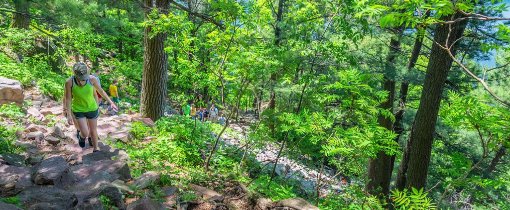
Devil's Lake has over 29 miles of hiking trails for any skill level, including amazingly scenic sections
of the National Ice Age Trail. The trails vary in condition and difficulty from easy to challenging and
are not maintained in the winter months.
Steep climbs or descents and stairways are common on Devils Lake's hiking trails. Use caution when on
the steep bluffs or near cliffs. Stay well away from cliffs and watch small children closely.
Camping
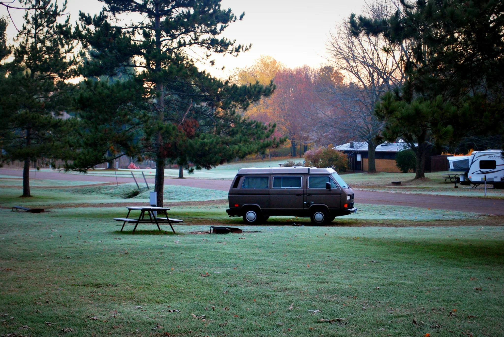
Devil's Lake State Park is a prime destination for camping enthusiasts, with its three campgrounds and a
total of 423 sites that can accommodate families of up to six individuals. Each campground has unique
features that make them popular with annual campers. Due to the park's immense popularity, it's
essential to plan ahead and make your camping or lodging reservations well in advance.
There are nine group campsites that can accommodate up to 240 campers, all located on the south shore
side.
Rock Climbing
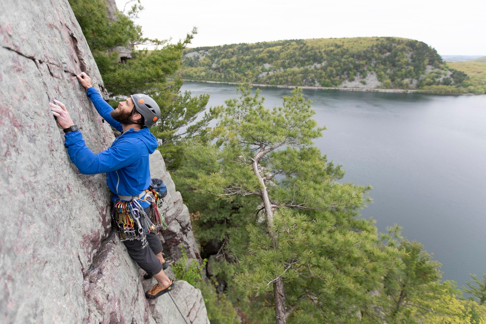
Devil's Lake State Park in Baraboo, Wisconsin offers some of the best rock climbing in the Midwest.
There
are over 1600 routes are listed in Swartling & Mayer's Climbing Guide to Devil's Lake. The park also
hosts some of the best climbing guides, instructors & outfitters! Guides offer private and group
climbing trips, anchors courses, bouldering and traditional climbing lessons for everyone from beginners
on up!
Water Sports
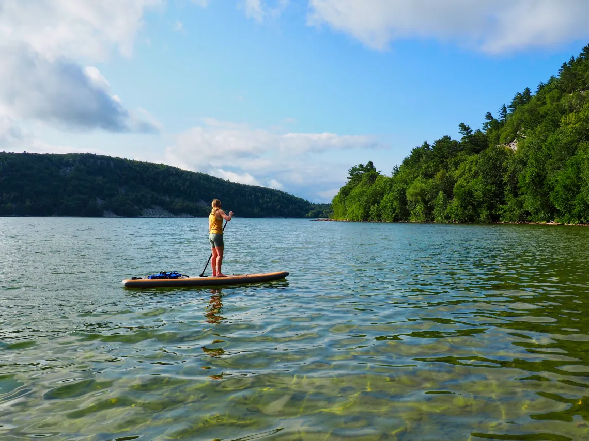
Devil's Lake State Park is a popular place for rowing, canoeing, kayaking, and stand-up boards. The lake
is clear and the water is of good quality. There is a boat launch on both the north and south ends of
the lake.
Picnicking
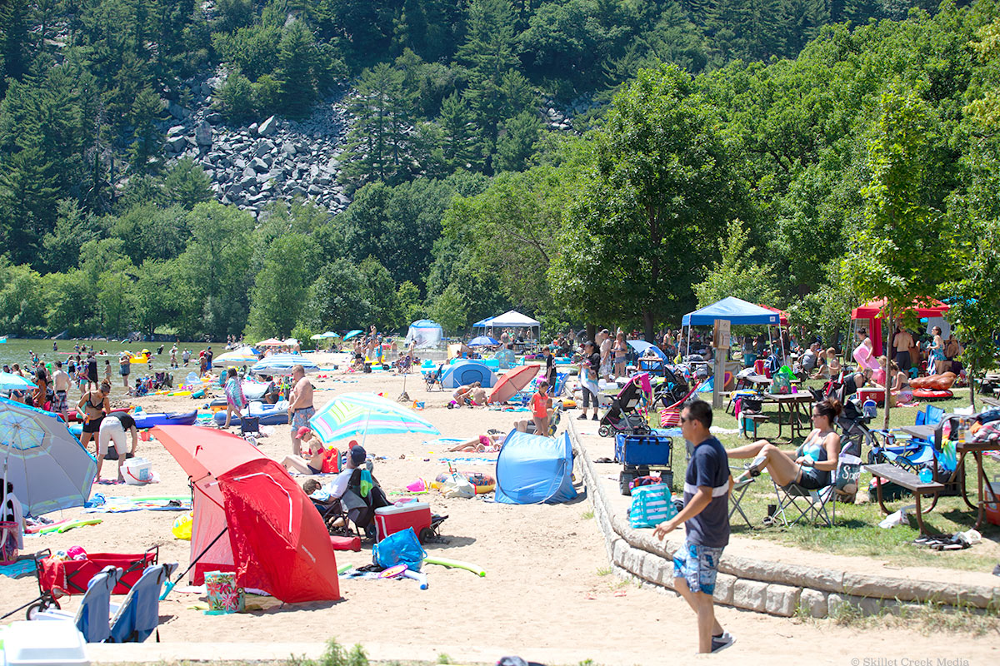
There are large picnic areas on both the north and south shores of Devil's Lake. Each area has tables,
drinking water (in season) and grills. Each shelter has electricity and tables. Shelter capacities vary
from 40 to 100 people.
Wildlife & Birdwatching
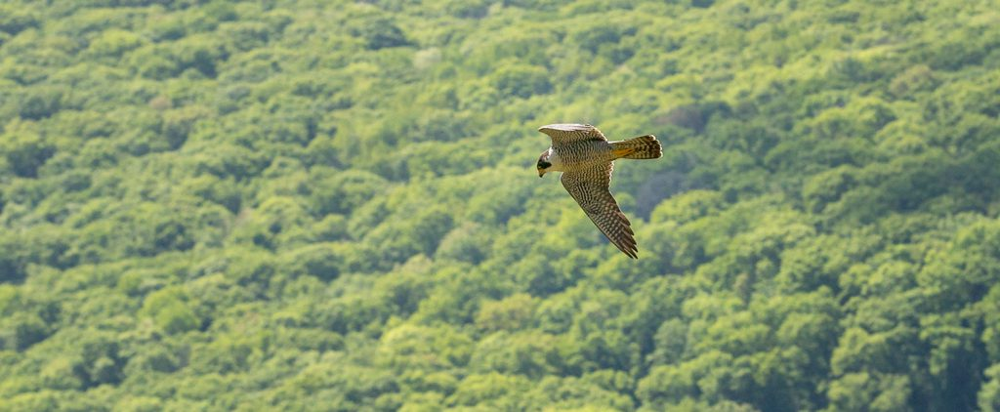
Devil's Lake State Park is home to about 38 species of mammals, 115 species of birds, and many species
of amphibians and reptiles including timber rattlesnakes. Though you are not likely to see all of them,
there are a variety of birds and mammals you may encounter while in the park. Some of these animals are
easy to spot, such as white deer crossing county road DL or the Turkey Vultures that fill the sky all
summer long! Other species take patience and a good eye to see.
Biking
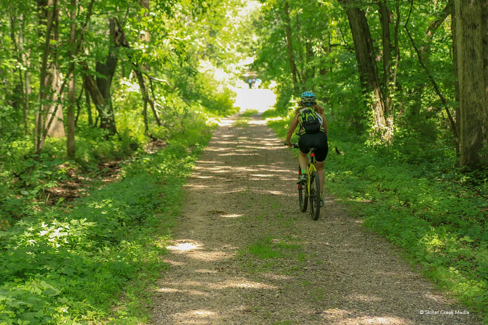
Devil's Lake State Park has no flat, paved or “family friendly” bike trails. Bicycles are only allowed
on the Uplands Loop Trail within the park. Bikes are not allowed on any other trails within the park.
he Uplands Loop Trail provides about 4 total miles of “mountain bike” trail at Devil’s Lake State Park.
For a short distance from the Steinke Basin parking lot in either direction, the trail offers some
medium effort sections on occasionally mowed grass trails, but soon cyclists will find themselves
climbing over 200 feet to ride the fairly challenging Uplands Trail. Dirt, mud, loose rock & gravel,
ruts, embedded boulders and fallen trees can create potential hazards on sections of the trail.
Nature Center & Programs
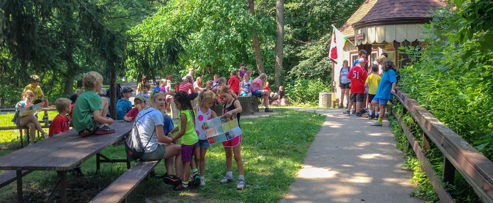
Devil's Lake Nature Center is now open and offers various activities for visitors. Visitors can
participate in a new virtual geology field trip and check out the programs and events calendar. Inside
the center, visitors can explore a three-dimensional model of the park, and there are hands-on items and
activities for children. The park also offers a full moon kayak tour and various summer nature programs
suitable for families and all ages.
Fishing
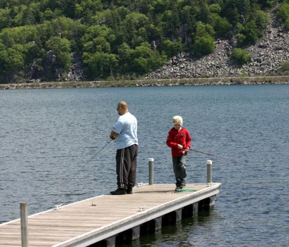
Devil's Lake has both warm and cold water fisheries. Each year the DNR stocks the lake with Brown trout.
Browns are taken mainly on small minnows or spinners of the steeply dropping east and west shores. You
will also find Walleyes which are stocked, and Northern Pikes. Easy access fishing is available along
the south shore of the lake where it is possible to fish just off the sidewalk. Please not however that
power boats are not allowed on Devil's Lake.
Scuba Diving
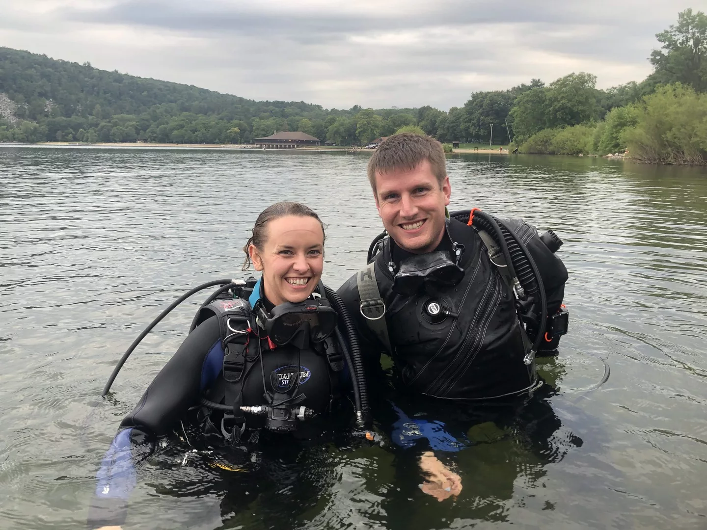
For decades Devil's Lake State Park has been a popular Wisconsin scuba diving destination. With a
maximum depth of about 45 feet, clear water, a fish-filled rocky shoreline, and no motor boats, Devil's
Lake is an ideal dive location.
Skiing
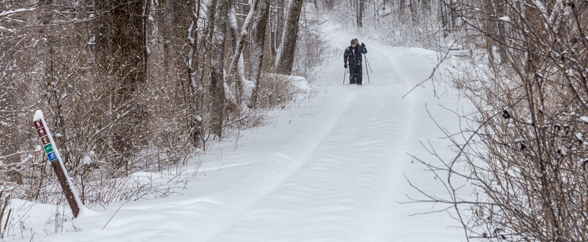
Devil's Lake State Park has one “Mutli-Use” loop trail which is often packed but not “tracked”. This is
the Steinke Basin Loop. Parts of the Johnson Moraine Trail may be packed as well. Depending on
conditions, skiers often like to explore the park's Uplands Trail as well. This trail is not maintained
for skiing but can be fantastic in fresh show!ƒ
Swimming
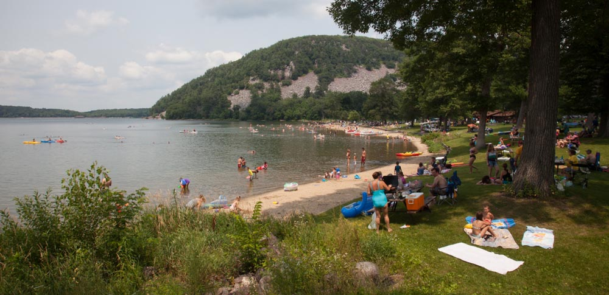
Devil's Lake State Park has two large sandy beaches, each with a bathhouse. These beaches are located on
both the north & south shores of the lake. Devil's Lake normally maintains a very comfortable swimming
temperature from Mid-June to Late September. Picnic areas, grills, and children's play areas including
climbing gyms and slides are located throughout the park.
Free To Borrow
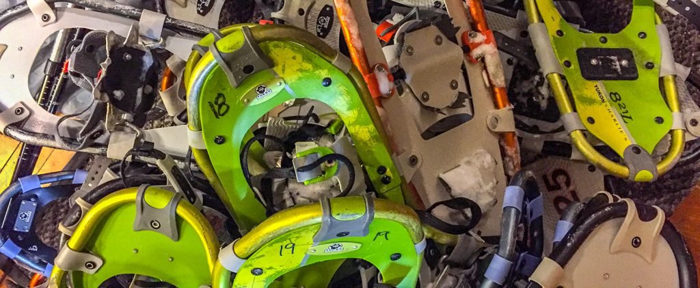
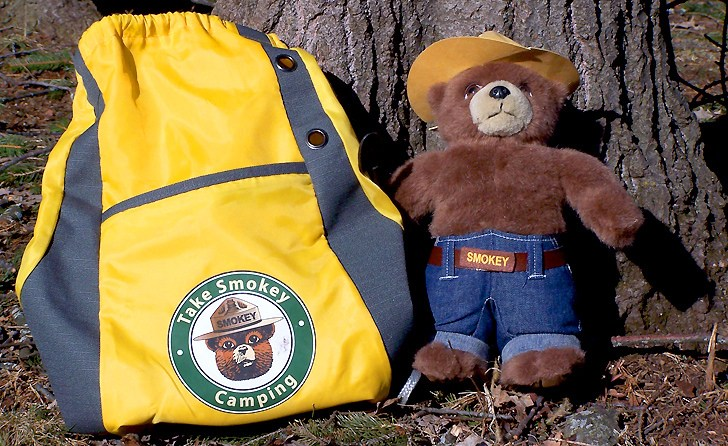
The following items can be checked out any time the Nature Center is open.
- Wisconsin Explorer Books and Backpacks
- Snowshoes
- Take Smokey Camping
- Fishing poles
- GPS units